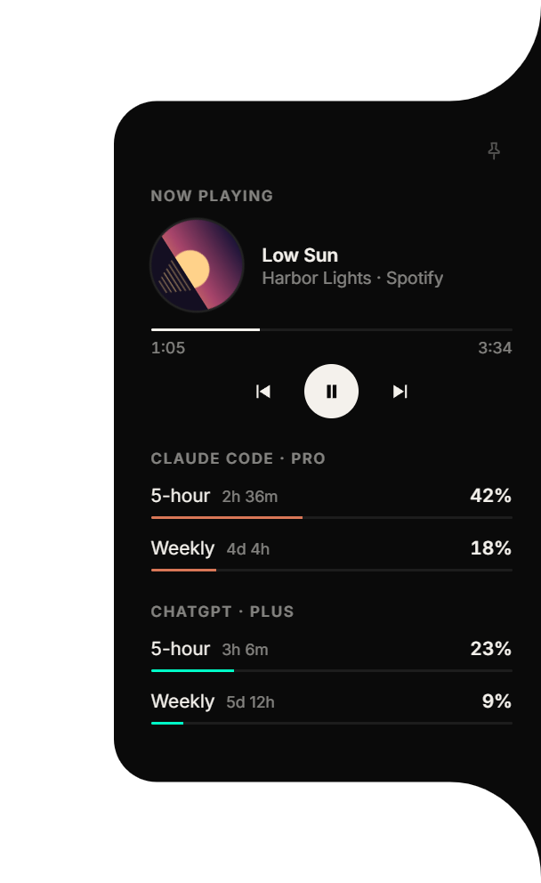
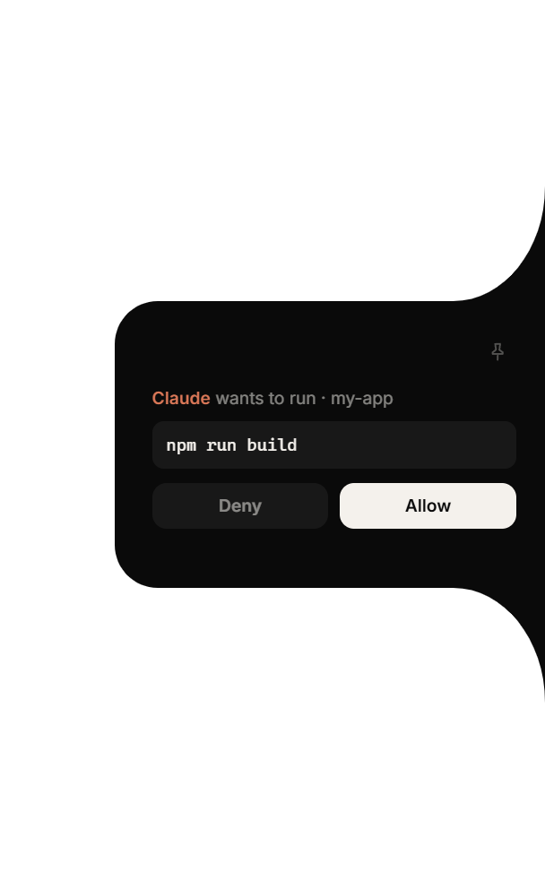
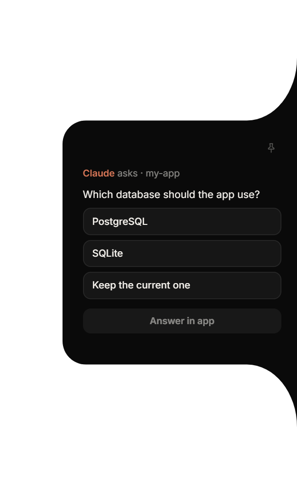

Keep an eye on your AI.
A small Windows widget that peeks out from the edge of your screen with your Claude Code and Codex limits, their prompts, and your music.
npm install -g github:loyd000/sneakpeekYour limits, before they run out.
Claude Code and ChatGPT usage with reset times, updated after every reply. A heads-up at 80% and 90%, and how long you have left at your current pace.
Your music sits on top: song, cover and controls for Spotify, YouTube and other players.



Say yes without switching windows.
When Claude Code or Codex asks for permission, or Claude asks you a question, the card shows up in SneakPeek. Answer it and keep going.
Pick where it lives.
Switch any time in Settings.
Quiet notes, right on time.
When work is done, when Claude is waiting for you, when a limit gets close or resets. Plus notes from your own scripts:
npm test; sneakpeek notify "Tests done"
Two commands.
You need Node.js 18 or newer, and Claude Code or Codex signed in.
npm install -g github:loyd000/sneakpeeksneakpeek
Settings opens on the first start. Switch on Claude Code and Codex, and you're set.